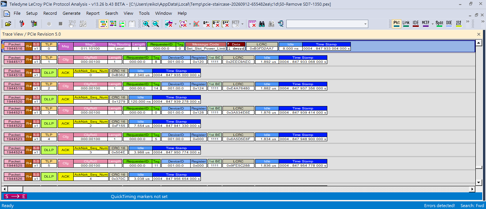

PCIe Trace 檢視報告
S0-Remove SD7-1350.pex。先看摘要即可理解本報告結果；檔案與程式身份資料放在頁面下方。
先看重點
這份報告檢查什麼？從 PCIe 擷取檔（trace）讀出前 5 筆 TLP（PCIe 封包），再抽樣與 LeCroy 畫面核對。
讀到資料5 筆（僅前五筆）
畫面核對5 / 5 筆相符
測試正常或異常未知
故障判斷未進行
簡單說：工具讀到並核對了這幾筆資料；這不代表裝置測試 PASS，也不代表已找出問題。整份 trace 尚未分析。
封包清單
封包編號
用這個編號在 LeCroy 畫面找到同一筆資料。
LeCroy 顯示名稱
分析軟體對封包顯示的名稱。
兩種時間
LeCroy 時間較精確；工具時間只到千分之一秒（1 毫秒），因此五筆都顯示 4.848 秒，不代表它們同時發生。
| 封包編號 | LeCroy 顯示名稱 | LeCroy 畫面時間 | 工具讀取時間 |
|---|---|---|---|
1944516 | Msg / MsgD | 4.847933004000 | 4.848 sec |
1944517 | Cfg / CfgRd0 | 4.847933068000 | 4.848 sec |
1944519 | Cfg / CfgRd0 | 4.847937356000 | 4.848 sec |
1944521 | Cfg / CfgRd0 | 4.847939414000 | 4.848 sec |
1944523 | Cfg / CfgRd0 | 4.847948900000 | 4.848 sec |
回看證據
- 先看 LeCroy 畫面核對：可用上方封包編號定位。
- 看工具原始輸出：確認工具實際列出的資料。
- 看資料底稿（JSON）：供程式或追查身份使用。
{kind=link}
展開 LeCroy 核對畫面

本報告沒有判斷的事
- 這份 trace 對應的裝置測試是 PASS 還是 FAIL。
- 整份 trace 的封包總數；目前只讀取前五筆。
- 封包內容、可疑區段或故障原因。
- LeCroy 的「Errors detected!」提示不等同產品測試結果。
技術附錄：檔案、軟體與原始欄位（需要重現或追查時再展開）
Trace 與軟體身份
Trace 原始檔
S0-Remove SD7-1350.pex
本機來源路徑
C:\Users\reiko\Desktop\Kent\ASUS NV CRB_20260604\GL9767\S0-Remove SD7-1350.pex檔案大小
105,224,486 bytes
Trace SHA-256
1ADB98F89C2C0CF2A9733EA01552E39438483C4A9741136DC4BE36F0A27F1AEB最後修改時間 (UTC)
2026-06-11T07:12:55.2721460Z分析軟體
Teledyne LeCroy PCIe Protocol Analysis 13.26 Build 43 BETA
PETracer SHA-256
160A542BF369701DF00466E744C9981FA9C530265AC237D81C0343C8F732E118VSE script
scripts/pcie/p0-d1-tlps.pevsScript SHA-256
91AAA647D24C4785A2C4418066B0D1A4BABF926E4C09B8F1EA86558EE0C507CA工具範圍
First five TLP callbacks emitted by the unchanged D1 bounded spike; not a full-trace traversal/count.
實際輸出欄位
in.Index TimeToText(in.Time) GetEventName() GetChannelName() in.TLPType in.LinkWidth工具時間來源
Vendor-formatted display text from TimeToText(in.Time); coarse seconds only. GUI timestamps are separate corroborating observations.
VSE 原始值
| 封包編號 | 原始類型碼 | Channel 標籤 | Link width |
|---|---|---|---|
| 1944516 | 0xE | Downstream | x1 |
| 1944517 | 0x9 | Downstream | x1 |
| 1944519 | 0x9 | Downstream | x1 |
| 1944521 | 0x9 | Downstream | x1 |
| 1944523 | 0x9 | Downstream | x1 |
這些是工具與分析軟體提供的技術欄位，不表示嚴重度或錯誤分類。
畫面可見的封包編號：1944516, 1944517, 1944518, 1944519, 1944520, 1944521, 1944522, 1944523, 1944524, 1944525。其中 1944518, 1944520, 1944522, 1944524 沒有出現在這支工具的五筆輸出中。下一筆畫面可見 TLP 是 1944525，只作畫面脈絡。
- VSE 原始輸出 SHA-256：
31EF4279896C216F4FA6928D275D5D3388F7FAC576A059CF4CBC5926D992EEF3 - GUI 截圖 SHA-256：
C6FE380483ACDB27775168AA91DA630F282889DFFA1E39CC09C21BC4DFF873A0 - 機器狀態碼：
PASS_BOUNDED；ground truthUNKNOWN；diagnosticNOT_EVALUATED；coverageFIRST_FIVE_TLP_RECORDS_ONLY。
Schema pcie.trace-inspection-observations/v1。這是單 trace 檢視資料，不是 PCIe finding contract、normalized event model 或 USB/PCIe 共用 schema。
來源中記錄的限制
- This is a single-trace inspection report, not PASS/FAIL triage.
- Ground truth is UNKNOWN; diagnostic result is NOT EVALUATED.
- Only the first five TLP callbacks emitted by this bounded script are represented; this is not full-trace coverage or a total TLP count.
- Extractor time is coarse vendor display text. More precise values shown are separate GUI cross-check observations.
- The extractor reports the vendor channel label Downstream; physical endpoint mapping is not established.
- No TLP payload, request/completion semantics, suspicious region, or root cause was analyzed.
- The GUI Errors detected! indicator is not interpreted as a device PASS/FAIL result.
- The source capture remains external to this report bundle; its identity is bound by size, modification time, and SHA-256.